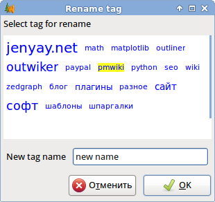

Add tags to your notes
Each note may be added any number of tags, which can then be used to find specific notes.
Tags may be added to the notes in several ways. First, you can add when you create a note. At the same tags must be separated by commas.
To facilitate the input of the existing tags, you can use the tag cloud below the input field. When you click on the tag, it will be added in the input field. Tags can be edited after you create notes with a similar dialogue, which is called by menu item "Tree - Page Properties...".
Tags can be added and from the main window without causing the page properties. For this purpose the panel "Tags" in the main window. If the "tags" window is hidden, it can be opened using the menu item "View - Tags."
When you click the middle mouse button label, by appropriate tag is added to the note or removed from it, depending on whether or not this tag is previously installed. Background tags assigned to the selected page is highlighted in color (yellow by default).
On the "Tags" panel font size for each label depends on the count of use of the tags of all the notes (the more popular the tag, the more it appears large font).
When you click on tag the left mouse button displays a list of pages that are also marked this tag.
Batch operations with tags
Batch adding and removing tags
OutWiker allows you to add or remove tags an entire branch in notes. To add tags to branch notes, follow these steps:
1. Select a note, which is the root for the branch to which you want to add one or more tags. If you want to add tags to the entire tree, select the root of the tree.
2. Select the menu item "Tools - Add Tags to Branch...". The following dialog appears:
3. Select the tags to be added to the notes (tags separated by commas.) You can select existing tags or enter new ones.
4. Click "OK", then the selected tags will be added to the branch notes. Selected tags are also added to the currently selected note.
To remove a tag from a branch or entire tree, you must do the same operations as described above to add the tags with the only difference is that in step 2 to select the menu item "Tools - Remove the labels from the branches..."
Tags rename
To rename an existing tag, select the menu item "Tools - Rename Tag...". The following dialog appears:

In a tags cloud, select tag you want to rename (tag chosen is highlighted), and the bottom text box, type a new name tag. Click "OK", then all notes of tree instead of the selected tags will be added to tag with a new name.
{kind=link}
{kind=link}
{kind=link}